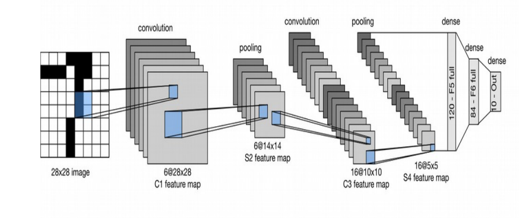

Forest fires have caused considerable losses to ecologies, societies, and economies worldwide. To minimize these losses and reduce forest fires, modeling and predicting the occurrence of forest fires are meaningful because they can support forest fire prevention and management. In recent years, the convolutional neural network (CNN) has become an important state-of-the-art deep learning algorithm, and its implementation has enriched many fields. Therefore, we proposed a spatial prediction model for forest fire susceptibility using a CNN. In order to detect fire automatically, a forest fire image recognition method based on convolutional neural networks is proposed
Every year, thousands of forest fire across the globe cause disasters beyond measure and description. There is a huge amount of very well studied solutions available for testing or even ready for use to resolve this problem. People are using sensors to detect the fire. But this case is not possible for large acres of forest. In this paper, we proposed a new approach for fire detection, in which modern technologies are used. In particular. The deep learning(open CV) methods for recognition and detection of smoke and fire, based on the still images the input from the cameras. Deep learning method “convolution neural network” can be used for finding the amount of fire. The accuracy is based on the algorithm which we are going to use and the datasets and splitting them into train set and test set. Forests are the protectors of earth’s ecological balance. Unfortunately, the forest fire is usually observed when it has already spread over a large area, making its control and stoppage arduous and is impossible at times. The result is devastating loss and irreparable damage to the environment and atmosphere (30% of carbon dioxide (CO2) in the atmosphere comes from forest fires), in addition to irreparable damage to the ecology (huge amounts of smoke and carbon dioxide (CO2) in the atmosphere). The conventional method is to prevent illegal logging. The goal of the system is to identify the possible dangers by continuously recording the noise in the forest, by processing segments of the recorded signals and decide upon the nature of each of these segments[1].
Implementing forest fire detection system based on deep learning and remote sensing.
This is the block diagram of our project. We obtain images using remote sensing and deep learning. Then we pre-process those images and feed those images to CNN model that we have developed. At time of testing if fire gets detected from the image we say fire is detected and further procedure will be done. If not we say that no fire detected.
This is low resolution black and white object recognition block diagram. Input size is 32x32 images and these images were then convolved to 6 channels of 28x28 pixels . Which are then reduced to 14x14 using average pooling having same channel size. This is followed by another convolution which reduced to 10x10 with 16 channels. Resolution again gets half i.e., 5x5 by using average pooling . This is in the end followed by fully connected units to 10x84.
In this forest fire system using deep learning and remote sensing we are going to detect the fire in the forest. In the methodology using the Aerial photography-based images which means it will take from the drones which will acquire the forest area of the desired region . The images will be used further to create dataset which will be needed in the neural network. Then the convolution is done by using the different types of filters like high pass, low pass and median filters etc. Then by doing the average pooling or maximum pooling according to which the features of the images will get extracted. To see the outcomes, we have to go through the different algorithms their advantages and drawbacks.